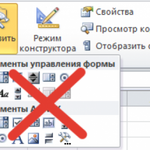

Code execution has been interrupted - что за баг?
Дмитрий(Админ) 12 Апрель 2016 Просмотров: 680 Нет комментариев
Иногда при выполнении вполне рабочего кода может возникнуть ошибка "Code execution has been interrupted": чаще всего она появляется в циклах (это Do ... Loop, For each, For ... Next). Но может проявится и на отдельных участках кода совершенно независимо от того, что делает тот или иной кусок кода. Сама по себе ошибка не является таковой - при нажатии Continue код продолжает работать и может даже дойти до конца уже без ошибок. Но что примечательно - появившись в каком-то коде однажды, эта ошибка начинает преследовать вас и при этом воспроизводится только на том ПК, на котором...
Рубрика:
Как защитить проект VBA паролем
Дмитрий(Админ) 1 Апрель 2016 Просмотров: 1268 2 коммент.
Для тех кто уже освоился более-менее в программировании на Visual Basic for Application рано или поздно непременно встает вопрос: как защитить свой код от изменений или даже от просмотра? Как правило это делается в файлах, которые в дальнейшем "гуляют по рукам". Т.е. автор создал и потом файл отсылается или другим пользователям, или клиентам, поставщикам и т.п. Чтобы у тех, кто будет в дальнейшем работать с этим файлом, не было возможности подсмотреть проект и тем более что-то в нем изменить. В каких-то случаях цель такой защиты это защита "от дурака": чтобы по...
Рубрика:
Как убрать заголовок у UserForm VBA
Дмитрий(Админ) 1 Март 2016 Просмотров: 1353 Нет комментариев
Иногда при разработке интерфейсов программы с помощью форм пользователя(UserForm) бывает необходимо запретить закрытие формы крестиком. Причин много: например на форме много элементов выбора и пользователь не должен просто закрывать форму крестиком, не выбрав что-то конкретное. Или может форма должна висеть постоянно на листе до тех пор, пока программа не сделает все необходимые действия и т.д. Варианта два Вариант 1 Можно просто запретить закрывать форму. Это значит, что после нажатия на крестик ничего не произойдет. Для этого надо перейти в...
Рубрика:
Отобразить процесс выполнения
Дмитрий(Админ) 26 Февраль 2016 Просмотров: 3032 Нет комментариев
Часто при создании кодов в VBA используется обращение к ячейкам, листам, книгам и т.д. и их обработка в циклах. Пара примеров подобных циклов: Просмотреть все файлы в папке - цикл по файлам в папке - Do While sFiles "" и For Each objFile In objFolder.Files Массовая замена слов - цикл по ячейкам(массивам) - For lr = 1 To UBound(avArr, 1) Не работают/пропали меню - цикл по всем панелям - For Each cmdBar In Application.CommandBars Если операция в цикле выполняется за пару секунд - это вполне приемлемо и отражать графически подобные действия нет нужды. Но, если циклы "крутятся" по полчаса - вполне неплохо иметь...
Рубрика:
Как ускорить и оптимизировать код VBA
Дмитрий(Админ) 20 Январь 2016 Просмотров: 5110 Нет комментариев
Рано или поздно у пишуших на Visual Basic for Applications возникает проблема - код хоть и облегчает жизнь и делает все автоматически, но очень долго. В этой статье я решил собрать несколько простых рекомендаций, которые помогут ускорить работу кода VBA, при этом в некоторых случаях весьма внушительно - в десятки, а то и больше, раз. Я не буду затрагивать в этой статье более "глубокие" решения по оптимизации кода(вроде правильного объявления типов переменных, работы разных типов циклов, работа с массивами вместо работы напрямую с ячейками и т.п.), т.к. для...
Рубрика:
Кто вызвал функцию или процедуру?
Дмитрий(Админ) 9 Декабрь 2015 Просмотров: 1488 Нет комментариев
Предположим вы написали два макроса - один скрывает строки, другой отображает. Visual Basic 'скрываем строки Sub HideRows() Range("A3:A14").EntireRow.Hidden = True End Sub 'показываем строки Sub UnhideRows() Range("A3:A14").EntireRow.Hidden = False End Sub 12345678 'скрываем строкиSub HideRows() Range("A3:A14").EntireRow.Hidden = TrueEnd Sub'показываем строкиSub UnhideRows() Range("A3:A14").EntireRow.Hidden = FalseEnd Sub И, конечно - создали кнопки для вызова этих двух кодов (подробнее про создание кнопок - Как создать кнопку для вызова макроса на листе). Но потом захотелось...
Рубрика:
Select и Activate - зачем нужны и нужны ли?
Дмитрий(Админ) 26 Июль 2015 Просмотров: 8644 Нет комментариев
Все начинающие изучать VBA сталкиваются с тем, что записанные через макрорекордер коды пестрят методами Select и Activate. Если не знакомы с работой макрорекордера - Что такое макрос и где его искать? Это значительно ухудшает читабельность кода и, как ни странно - быстродействие. Но есть недостатки и куда более критичные. Если код выполняется достаточно долго и он постоянно что-то выделяет - пользователь может заскучать и забыться и начнет тыкать мышкой по листам и ячейкам, выделяя не то, что выделил ранее код. Что повлечет ошибки логики. Т.е. код может...
Рубрика:
Отлов ошибок и отладка кода VBA
Дмитрий(Админ) 21 Март 2015 Просмотров: 11945 Нет комментариев
Очень часто начинающие работать в VBA сталкиваются с различными ошибками, которые выдает код в момент выполнения. Если не знать как поступить в данном случае – то очень сложно будет исправить код быстро, а то и вообще невозможно будет определить причину ошибки без помощи более "продвинутых" пользователей. Новички зачастую делают правки наугад, что может порождать иные ошибки, а это в свою очередь не только затрудняет поиск первоначальной ошибки, но и может привести к невозможности исправить код вообще. Поэтому в этой статье я решил описать...
Рубрика:
Microsoft лишил Excel 2007 и 2010 элементов ActiveX
Дмитрий(Админ) 11 Декабрь 2014 Просмотров: 17830 11 коммент. 
Сегодня по многим форумам, посвященным Microsoft Office разлетелась проблема: Перестали работать все кнопки ActiveX CommandButton во всех файлах, а так же невозможно вставить любой элемент ActiveX на лист(при попытке вставки появляется сообщение Вставка объекта неосуществима). Подробнее про вставку таких элементов на лист можно прочитать в статье: КАК СОЗДАТЬ КНОПКУ ДЛЯ ВЫЗОВА МАКРОСА НА ЛИСТЕ? Там я описывал пример вставки кнопки через ActiveX, но сути это не меняет - остальные элементы вставляются точно так же. При этом очевидных решений проблем не видно, т.к....
Как создать свою надстройку?
Дмитрий(Админ) 11 Август 2014 Просмотров: 30021 15 коммент.
В этой статье: Что такое надстройка Как создать надстройку Создание собственного меню надстройки для версий Excel 2003 Создание собственного меню надстройки для версий 2007 и выше ЧТО ТАКОЕ НАДСТРОЙКА Для начала разберемся - что такое надстройка и для чего она нужна. Надстройка - это файл Excel, имеющий расширение .xla или .xlam(только для 2007 и выше), который по умолчанию открывается как скрытая рабочая книга и может быть подключен к приложению для автоматического запуска вместе с запуском самого приложения. Книга надстройки открывается, но в...
Субъект не имеет доверия для выполнения указанного действия
Дмитрий(Админ) 7 Ноябрь 2013 Просмотров: 1654 Нет комментариев
Недавно столкнулся с ситуацией, когда в присланном файле не обнаружил на пользовательских формах(UserForms) элементов RefEdit. Кто не в курсе, данный контрол предназначен для указания диапазона ячеек. По умолчанию он отсутствует в стандартном наборе контролов на форме Toolbox, но его легко добавить: Tools- Additional Controls- RefEdit(или RefEdit.Ctrl) Естественно, формы в файле не работали должным образом и при вызове выдавали ошибку, ругаясь на отсутствие контрола. Я лично грешу, что произошло это у меня после обновления офиса до версии RU-EN(ранее была только RU). Странно все...
Рубрика:
Как узнать существует ли модуль в книге
Дмитрий(Админ) 3 Август 2013 Просмотров: 1554 Нет комментариев
Продолжая цикл статей про работу с проектом VBA решил что будет не лишним привести пример того, как проверить существует ли определенный компонент VBA в проекте. Возможно, это пригодится при внесении изменений в коды: чтобы проверить присутствует ли нужный модуль в книге и если нет - то добавить или завершить процедуру без возникновения ошибки. Для работы с кодами VB-проекта программно необходимо, чтобы было проставлено доверие к объектной модели проекта VBA и изменяемый проект не должен быть защищен. Подробнее читайте в статье: Что...
Рубрика:
Что необходимо для внесения изменений в проект VBA(макросы) программно
Дмитрий(Админ) 3 Август 2013 Просмотров: 4430 Нет комментариев
Рано или поздно у разработчика по различным причинам возникает желание внести какие-либо изменения в созданный им код или добавить в только что созданный кодом файл код VBA. Распространенная ситуация: создали файл обработки, разослали пользователям. Потом доработали код VBA, что-то там добавили, улучшили, а заменять файлы пользователей уже нельзя(они там данные вносят и хранят). Изменять отдельно код VBA каждого файла занятие не из самых привлекательных. Вот здесь-то как раз очень бы пригодилось изменять коды программно. О том как именно...
Рубрика:
Как добавить код процедуры программно, скопировать модуль
Дмитрий(Админ) 3 Август 2013 Просмотров: 32476 4 коммент.
Бывают ситуации, когда кодом создается книга, в нее опять же кодом заносятся данные. И порой необходимо помимо всего прочего добавить в новую книгу и код VBA. Естественно, тоже программно. На самом деле это совсем не сложно. Для изменения кодов программно необходимо, чтобы было проставлено доверие к объектной модели проекта VBA и изменяемый проект не должен быть защищен. Подробнее читайте в статье: Что необходимо для внесения изменений в проект VBA(макросы) программно Без этого будет невозможно программное вмешательство в проект VBA. В данной...
Рубрика:
Работа с модулями классов
Дмитрий(Админ) 1 Август 2013 Просмотров: 13257 12 коммент.
Многие наверняка слышали про модули классов, но не все их используют. На самом деле довольно многие программирующие на VBA за все время программирования прекрасно обходятся без применения модулей классов. Т.к. VBA не является языком объектно-ориентированного программирования(ООП) в строгом смысле слова, то пользовательские классы здесь не обязательны и как следствие не так уж и часто используются при разработке. Это не значит, что VBA не содержит модулей классов: модули книги, листов, пользовательские формы - все это модули классов. Многие,...
Рубрика:
Как сделать гиперссылку на процедуру?
Дмитрий(Админ) 31 Январь 2013 Просмотров: 2521 Нет комментариев
В своих статьях я часто прикладываю примеры с кодами. Т.к. мой сайт ориентирован как на знающих программирование в Visual Basic for Application(VBA), так и на начинающих, я в примерах почти всегда на первом листе делаю кнопку, по нажатию которой можно сразу же перейти в редактор VBA на нужный код без каких-либо лишних телодвижений. Как-то меня уже просили разъяснить каким способом я это делаю. Вот сегодня на одном из форумов попросили в очередной раз, что и побудило меня сесть и написать эту статью. Итак, к сути. На самом деле это не так уж и сложно. Для начала...
Рубрика:
Как отменить действия макроса
Дмитрий(Админ) 24 Февраль 2012 Просмотров: 11137 10 коммент.
Многие из тех, кто программирует в VBA знают, что после действий макроса пропадает возможность отмены действий. И если с отменой тех действий, которые были совершены до выполнения макроса совершенно точно можно распрощаться(невозможно будет это сделать), то отменить действия макроса возможно. И рано или поздно каждый программирующий в VBA задается вопросом: как можно отменить действия, совершенные макросом? Для начала надо понять, в каких ситуациях это нам надо. Например был выполнен код, который испортил или удалил данные в файле, но эти...
Рубрика:
Как быстро заполнить/очистить элементы на форме(TextBox-ы, ComboBox-ы)
Дмитрий(Админ) 5 Май 2011 Просмотров: 14932 12 коммент.
Очень часто при работе с формами(UserForm) приходится заполнять значениями КомбоБоксы(ComboBox) и ТекстБоксы(TextBox). Иногда однотипными данными. Или очистить их все после выполнения какого-либо действия. А может проверить, все ли элементы заполнены, прежде чем продолжать действие. Если КомбоБоксов/ТекстБоксов пару штучек - не проблема Visual Basic TextBox1 = "" TextBox2 = "" 12 TextBox1 = ""TextBox2 = "" и всех делов. А если их порядка двадцати? Или больше? Мало того, что писать это все долго, так еще и код растягивается, как...
Рубрика:
Удаление макросов из активной книги
Дмитрий(Админ) 1 Май 2011 Просмотров: 936 3 коммент.
Вызов команды: MulTEx -группа Книги/Листы -Книги -Удаление макросов Команда слегка специфична. Она удаляет все указанные компоненты VBA проекта. Может пригодится в случаях, если Вы сначала обрабатываете отчет с помощью различных макросов(записанных макрорекордером или созданных иным способом), которые размещены непосредственно в этом отчете. Но отправить этот отчет Вам надо без всех этих макросов. Если все они находятся в одном модуле - это не проблема. А если нет? Если у Вас помимо стандартных модулей есть еще Пользовательские формы(UserForm),...
Рубрика:
Ошибка - Cant find project or library
Дмитрий(Админ) 1 Май 2011 Просмотров: 30537 41 коммент.
Вы сами написали макрос и кому-то выслали. Макрос хороший и рабочий. Вы сами проверили и перепроверили. Но тут Вам сообщают - "Макрос не работает". Выдает ошибку - Can't find project or library. Вы запускаете файл - нет ошибки. Еще раз - нет. Как ни пытаетесь, какие данные не подсовываете, а ошибки такой нет. Вы уверены, что файл рабочий полностью(и верно - ведь у Вас работает), а Вам пытаются доказать обратное. Вы начинаете долго объяснять как пользоваться, что делать и т.д. и т.п. Ошибка не исчезает. Что делать-то? В чем проблема? Даже офис переустановили - у Вас...
Что такое модуль? Какие бывают модули?
Дмитрий(Админ) 1 Май 2011 Просмотров: 67179 14 коммент.
Любой код VBA должен где-то храниться. Для хранения кодов в VBA используются модули, которые хранятся в книге. Книга может содержать сколько угодно модулей. Каждый модуль в свою очередь может содержать множество процедур(макросов). Все имеющиеся в книге модули можно посмотреть через редактор VBA (Alt+F11). Имеющиеся модули отображены в левой части редактора в проводнике объектов(Project Explorer). рис.1 Сам проводник объектов может быть не отображен по умолчанию и тогда его необходимо отобразить: нажать Ctrl+R либо в меню редактора VBA-View-Project Explorer Модули...
Рубрика:
Что такое макрос и где его искать?
Дмитрий(Админ) 1 Май 2011 Просмотров: 133840 15 коммент.
Скачать файл, используемый в видеоуроке: Tips_Macro_Basic_Video.xls (63,5 KiB, 1 470 скачиваний) Наверное, многие слышали это слово "макрос", но не все имеют точное представление что это, если заглянули на эту страничку. Макрос - это макрокоманда(так звучит в правильном переводе с англ.языка), содержащая последовательность действий, записанных пользователем. Запись производится с помощью встроенного в пакет Microsoft Office языка программирования - Visual Basic for Application(VBA). Зачем же нужны макросы? А нужны они для того, чтобы избавить Вас от рутинного выполнения одних...
Рубрика:
Variable not defined или что такое Option Explicit и зачем оно нужно?
Дмитрий(Админ) 1 Май 2011 Просмотров: 6354 Нет комментариев
Option Explicit - начинающие программировать в Visual Basic могут увидеть данную строку в чужом коде, либо случайно в своем. Хотя кто-то может быть уже знает, что это и зачем и использует данное объявление намеренно. Я же постараюсь максимально подробно описать смысл этой строки и её полезность для кода в первую очередь для тех, кто еще не знает для чего она. Строка данная записывается в самом начале модуля, самой первой строкой. Перед этой строкой ничего более не может быть записано, кроме, разве что других подобных строк(есть еще другие :-)) Собственно...
Рубрика:
Почему не работает макрос?
Дмитрий(Админ) 1 Май 2011 Просмотров: 21239 2 коммент.
Вы скачали файл с данного сайта с примером макроса, но он не работает! Как? Неужели автор сайта выложил неработающий пример и не знает об этом? Или Вы где-то нашли код макроса, вставили его куда положено(в модуль) - но не работает... Почему? Ведь вставили все правильно, да и другие люди пишут - отличный макрос, здорово работает. Работает. У всех, кроме Вас. И Вы начинаете задумываться: "А чем же я и мой Excel такие особенные?". А ответ может быть прост - Вы перед выполнением макроса не разрешили эти самые макросы. По умолчанию выполнение макросов в Excel...
Рубрика:
Что такое переменная и как правильно её объявить?
Дмитрий(Админ) 1 Май 2011 Просмотров: 32028 10 коммент.
Переменная - это некий контейнер, в котором VBA хранит данные. Если подробнее, то это как коробочка, в которую Вы можете положить что-то на хранение, а затем по мере необходимости достать. Только в данном случае в переменной мы храним число, строку или иные данные, которые затем можем извлекать из неё и использовать в коде по мере необходимости. Требования к переменным Типы данных, хранимых в переменных Как объявлять переменные Как правильно назвать переменную Пример использования переменных Константы Требования к переменным: В качестве...
Рубрика:
Как создать кнопку для вызова макроса на листе?
Дмитрий(Админ) 1 Май 2011 Просмотров: 94693 29 коммент.
После создания макроса часто возникает вопрос: а как его теперь запустить? Можно, конечно, нажать сочетание клавиш Alt+F8 и выбрать нужный макрос, но...Во-первых это не всегда удобно, особенно если макросов больше 5-ти. Во-вторых: если файлом с макросом будут пользоваться другие люди, не умеющие всего этого делать, придется объяснять им все это, что тоже не очень здорово - многие просто будут вспоминать Вас не очень хорошими словами :-) Но к нашему общему счастью в Excel есть замечательная возможность создавать элементы, с помощью которых можно...
Рубрика:
Управление безопасностью макросов
Дмитрий(Админ) 30 Апрель 2011 Просмотров: 12720 8 коммент.
Эта программка предназначена для изменения параметров безопасности макросов. Это те, которые расположены: Excel 2003: Сервис-Безопасность-Уровень макросов Excel 2007: Меню-Параметры Excel-Центр управления безопасностью-Параметры центра управления безопасностью-Параметры макросов Excel 2010: Файл-Параметры-Центр управления безопасностью-Параметры центра управления безопасностью-Параметры макросов Для чего это надо. Вы сделали файл с макросами, который планируете кому-то отправить. Но ведь человеку надо объяснить, что для правильной работы файла...
Рубрика:
Панель иконок FaceID
Дмитрий(Админ) 30 Апрель 2011 Просмотров: 3622 Нет комментариев
Надстройка содержит всего две кнопки - Создать меню FaceID и Удалить меню FaceID. Может пригодиться начинающим программировать в VBA для назначения изображений на кнопки собственных панелей. Файл помощи отсутствует ввиду простоты использования. При нажатии на Создать меню FaceID на панель добавляется выпадающее меню с категориями. Каждая категория обозначает диапазон FaceID иконок (1-300, 301-599 и т.д.). При наведении на категорию отображается список входящих в неё FaceID. Слева иконка, а справа номер её FaceID, который уже можно использовать в коде для...